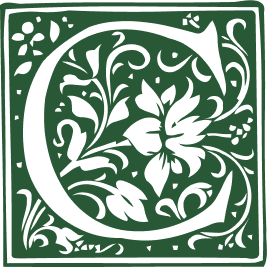

Aquí anoto términos, conceptos y demás breve información que voy aprendiendo consecuencia de mi trabajo, estudio y ocio; y que me resulta interesante o útil recordar.
Arracada: en los incunables, espacio en blanco que a veces muestra una letra provisional o de espera para ser iluminada manualmente.

Cordobán: encuadernación hecha con piel de cabrito.
Cota: en el ámbito de la biblioteconomía, una de las formas para referirse a la signatura de un material.
Crisografía: escritura en oro.
Factótum:taco xilográfico que permite introducir en su interior una letra de caja alta con el fin de que cumpla la función de una capital de mayor tamaño.
Foxing:moteado en español, son las manchas irreversibles producidas en el papel como consecuencia de la acción de los hongos.
Mancheta: en las publicaciones periódicas y seriadas, lugar que proporciona los datos principales de identificación.
Nomparela: en impresión, tipo más pequeño que se fundía.